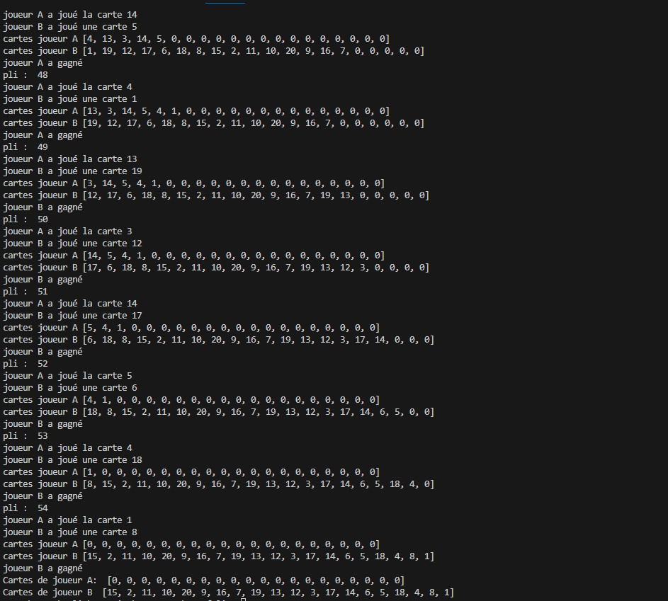
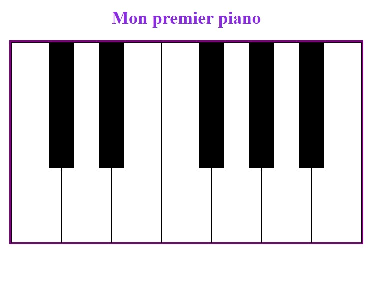
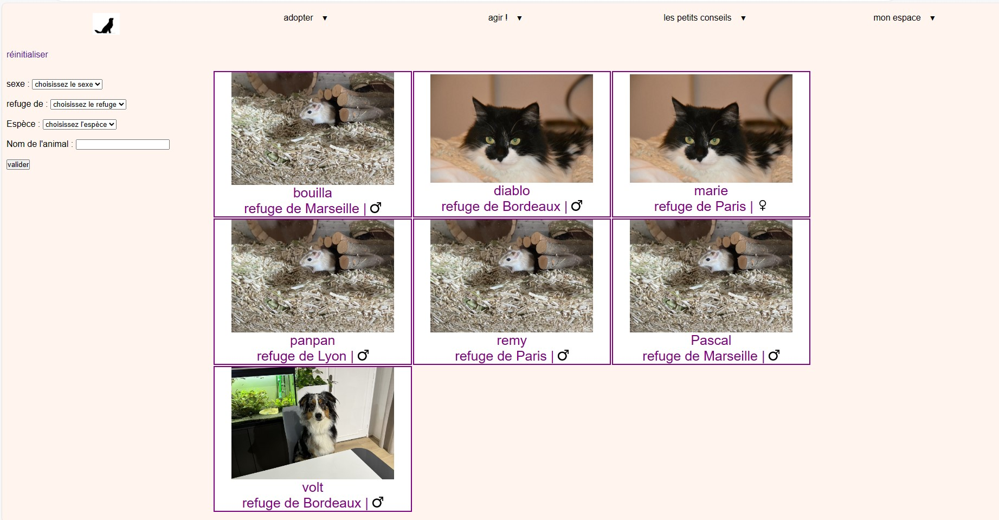

Le BTS SIO (Services Informatiques aux Organisations) est un diplôme de l'enseignement supérieur français. Il est délivré après deux années d'études dans le domaine de l'informatique et des systèmes d'information. SIO se divise en deux options : SISR (Solutions d'Infrastructure, Systèmes et Réseaux) et SLAM (Solutions Logicielles et Applications Métiers).
Je suis actuellement étudiante en BTS Services Informatiques aux Organisations (SIO) avec une spécialisation en Solutions Logicielles et Applications Métiers (SLAM). Cette formation m'a permis d'acquérir des compétences approfondies dans le développement de logiciels et d'applications adaptées aux besoins des entreprises. Passionnée par la programmation et l'informatique depuis mon plus jeune âge, j'ai choisi de me spécialiser dans le développement pour approfondir mes connaissances et acquérir une expertise solide dans ce domaine en constante évolution.
Mon parcours en BTS SIO m'a offert une base solide en langages de programmation tels que Java, PHP, et JavaScript, ainsi qu'une compréhension approfondie des principes de conception logicielle et de développement d'applications métiers. Ces connaissances techniques combinées à ma passion pour la résolution de problèmes informatiques m'ont conduit à envisager la poursuite de mes études dans le domaine du développement.
Je suis déterminée à continuer mon parcours académique en me spécialisant davantage dans le développement. Mon objectif est de poursuivre mes études universitaires ou de rejoindre un programme de formation professionnelle avancée qui me permettra d'approfondir mes compétences et de rester à la pointe des technologies émergentes. Mon ambition est de devenir une développeuse chevronnée et de contribuer à la création de solutions innovantes qui répondent aux défis technologiques actuels et futurs.
Ces connaissances en développement ont été acquises durant mes 2 années de BTS.
Bts Sio option SLAM
Bac général option SVT, Physique-chimie et maths complémentaire
Vous trouverez mes projets réalisés jusqu'à ce jour
| 
Jeu de la bataille réalisé en python |

Piano interractif réalisé en javascript et CSS |

Site gérant la gestion d'un refuge animalier réalisé en PHP, Html, CSS et Mysql |
La veille technologique consiste à surveiller l'évolution technique dans un domaine particulier.
Pour réaliser ma veille technologique j'ai utiliser Feedly, cela permet de regrouper toute les informations nécessaires pour réaliser une veille.
J'ai aussi utilisé googles alerts
permettant d'avoir tout les nouveaux articles sur mon sujet de veille.
Ma veille technologique traitera du sujet de l'intelligence artificielle générative
L'intelligence artificielle générative (IA générative) est une catégorie d'IA qui se concentre sur la création de données, de contenu ou de choses artistiques, de façon indépendante.
Un copieux rapport d’information parlementaire fait un point complet sur les avantages et inconvénients de l'IA générative en France et en Europe.
L'Intelligence artificielle générative commence à redessiner, discrètement mais surement, le marché du travail
Selon une étude américaine, 90% des professions seront impactées par le développement de l’IA générative d’ici 2032.